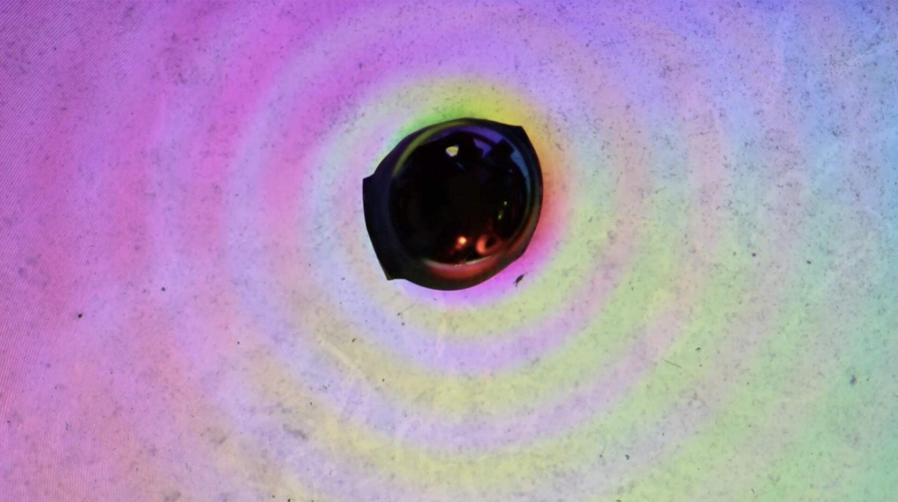
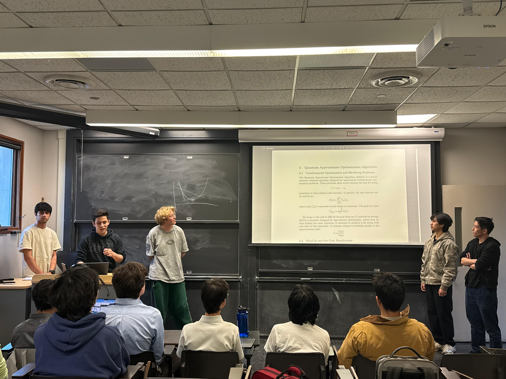
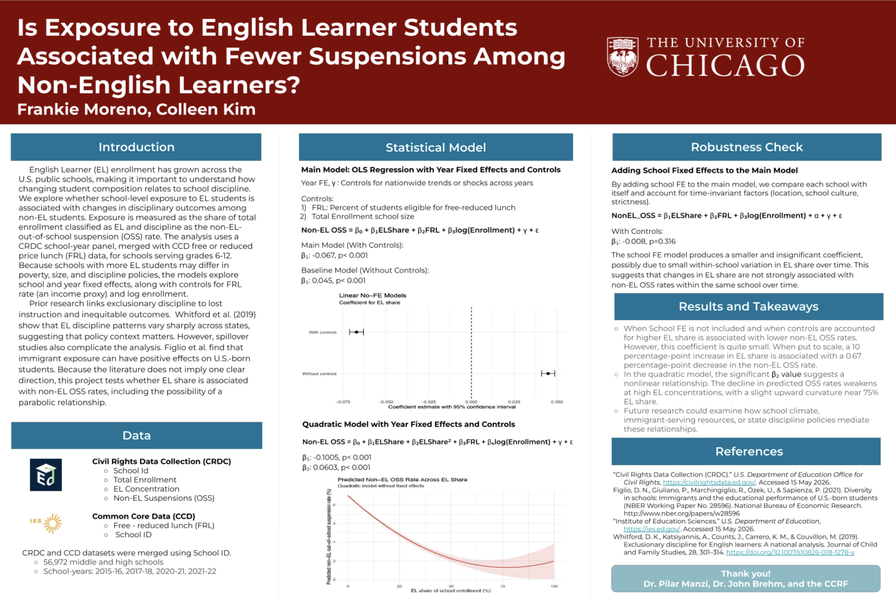

University of Chicago · Physics + Molecular Engineering
Hi, I’m Francisco — I like building at the intersection of quantum materials, data, and physical systems.
I’m a student researcher and builder who enjoys moving between code, experiments, and hardware. Lately that has meant helping develop computer-vision tools for RHEED analysis in robotic MBE, building wave-generating devices in the Hunt Lab, and exploring data science problems in industry at Grainger.
currentlyYang LaboratoryAI-driven epitaxy, RHEED analysis, and quantum materials
also buildingHunt LaboratoryEmbedded systems and hydrodynamic wave devices
recentlyGraingerData science apprenticeship focused on customer behavior
next step4+1 M.Eng. in Quantum EngineeringExpected after my undergraduate degree at UChicago
About
A little more than the bullet-point version.
I’m currently pursuing dual bachelor’s degrees in Physics and Molecular Engineering at the University of Chicago. What draws me in most are problems where theory meets something tangible: a material surface changing during growth, a device that needs to be designed and built, or a messy dataset that starts to tell a story once the right model is in place.
I like working across disciplines. In one setting, that looks like writing Python pipelines for image-based analysis of RHEED growth sequences. In another, it means designing a floating device in Fusion 360, printing it, wiring a controller, and watching it generate repeatable wave patterns in a tank. I’ve also enjoyed using statistics and machine learning in more applied contexts, especially when the goal is to turn analysis into something practical and useful.
What I enjoy
Building things end-to-end: from the first idea, to the code or CAD model, to a result you can actually test, show, or improve.
What I’m looking for
Research, engineering, and data-focused opportunities where I can keep learning and contribute to hard technical problems.
What I’m working on
The mix of research and applied work that’s shaping how I think.
Research · Yang Laboratory
Teaching machines to interpret how quantum materials grow
Undergraduate Research Assistant · Self-Learning Robotic Epitaxy Project
Feb 2026 – Present
At the Yang Lab, I’m contributing to an AI-driven robotic molecular beam epitaxy platform for superconducting quantum materials and devices. A lot of my work has focused on making RHEED patterns easier for both people and algorithms to interpret during growth.
Built a Python false-color pipeline to make subtle RHEED features more visible during process evaluation.
Developed a computer-vision workflow for 3,000+ frame growth sequences using VGG16 feature extraction, PCA/Ward clustering, NMF, and changepoint detection.
Used those tools to identify evolving surface states and better characterize transitions during MBE growth.
computer visionMBERHEEDPython
Research · Hunt Laboratory
Building physical systems to explore motion and waves
Undergraduate Researcher · Physics Research
Feb 2026 – Present
In the Hunt Lab, I’ve been working on hands-on experimental builds that combine mechanics, controls, and fabrication. It’s been a fun counterbalance to my more computational work because it forces me to think through design constraints in the real world.
Designed and built an embedded control system with an Arduino microcontroller to drive a stepper motor with precision.
Modeled and engineered a hydrodynamic device that generates surface waves through rotational motion.
Used the project to explore fluid-structure interaction and wave behavior through iterative design and testing.
embedded systemsfluid dynamicshardware
Industry · Grainger
Turning customer data into more actionable decisions
Data Science Apprentice
Jun 2026 – Aug 2026
One of my favorite snapshots from the summer at Grainger.
During my data science apprenticeship at Grainger, I worked with large behavioral datasets to understand customer patterns and support more targeted decision-making. I enjoyed the way the role combined statistical thinking, pipeline building, and business context.
Processed and structured large multi-variable datasets in SQL and R for machine-learning analysis.
Applied k-means clustering, PCA, and Firth logistic regression to identify behavioral patterns and predict customer outcomes.
Built a Python and Streamlit visualization pipeline to make large datasets easier to explore and interpret.
SQLRStreamlitML
Projects & explorations
A few projects that reflect the kinds of problems I like to spend time on.
Build project
Controlled Wave Generator
Hunt Lab

The wave-generator prototype in action. The color wheel under the tub made the surface-wave pattern much easier to see.
I designed this floating wave-generating device as a compact system that could reliably produce visible, repeatable surface waves. The project combined CAD, fabrication, embedded control, and a lot of iterative trial and error.
Fusion 360ATtiny853D printingcontrols
Course project
Quantum Machine Learning Project
UChicago Quantum Society

Presenting our QML project — a fun chance to translate technical material into something more accessible.
As part of the UChicago Quantum Society, I helped co-author a student-facing introduction to quantum machine learning. I wrote and presented sections on QAOA, hybrid quantum-classical algorithms, and barren plateaus, with the goal of making the subject easier for other students to approach.
This QuantumLab project brought together three connected ideas from quantum optics: Hong-Ou-Mandel two-photon interference, photon-based randomness, and polarization-encoded quantum key distribution. It was one of the projects that made experimental quantum systems feel concrete to me.
HOM visibility ≈ 70.4%3 NIST tests passedBB84 demonstrated
EL Enrollment and Non-EL Discipline Rates Analysis
University of Chicago

A poster summarizing the data, modeling, robustness checks, and takeaways from the project.
For this project, I merged and analyzed CRDC and CCD administrative datasets in R to explore how English Learner enrollment share relates to non-EL suspension rates. It was a chance to combine econometric modeling with a question grounded in education policy.
A student-oriented introduction to quantum machine learning, with sections on QAOA, hybrid quantum-classical algorithms, and barren plateaus in optimization.
Is Exposure to English Learner Students Associated with Fewer Suspensions Among Non-English Learners?
A project using CRDC and CCD data with linear, quadratic, and fixed-effects OLS models to study the relationship between EL enrollment share and non-EL out-of-school suspension rates.
QuantumLabIntermediate Quantum EngineeringMachine Learning & AI for Molecular DiscoveryPrinciples of Engineering Analysis I–IIMolecular Engineering Transport Phenomena
4+1 Scholars Program · M.Eng. in Quantum Engineering
Expected June 2029
Quick notes
A few additional details that mattered along the way.
awardsHispanic Scholarship Fund Scholar · UChicago Dean’s Scholar · Illinois State Scholar · United States Marine Corps Scholastic Excellence
languages & toolsPython, R, SQL, Java, MATLAB, Fusion 360, Excel, PowerPoint, Google Workspace
interestsQuantum computing, experimental physics, scientific computing, and technically grounded data science.